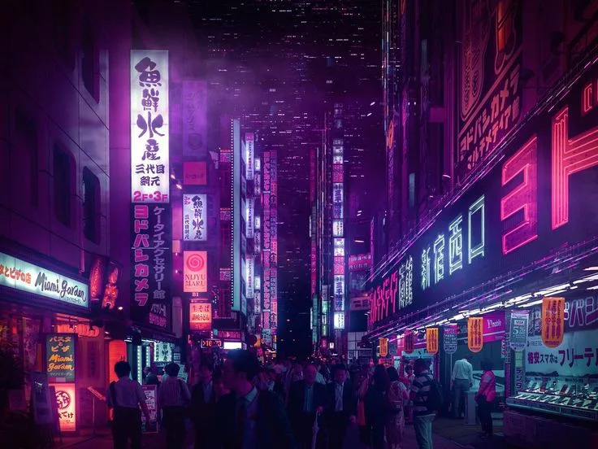

Токио — современный мегаполис, сочетающий небоскрёбы, храмы и уникальную культуру.
Ночной Токио — это завораживающее зрелище, где неоновые огни оживляют город, создавая атмосферу футуристического мегаполиса. Яркие вывески, сверкающие небоскрёбы и улицы, наполненные движением, делают Токио особенно красивым после заката. Прогуливаясь по Сибуе или Синдзюку, можно ощутить ритм этого города, который никогда не спит.
